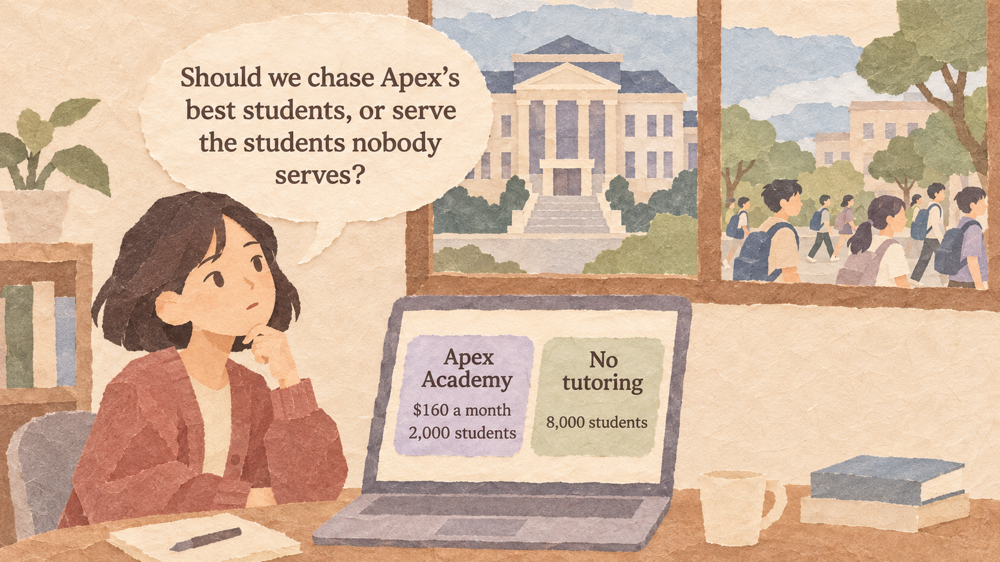
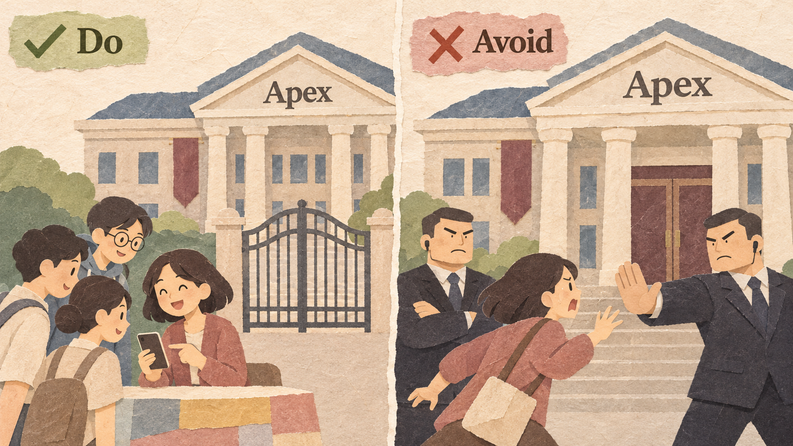
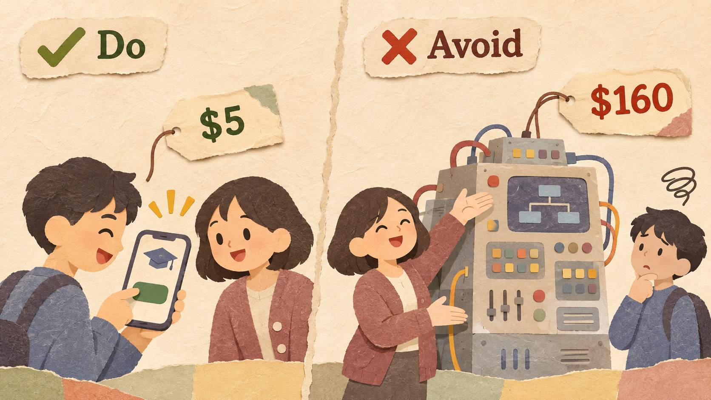
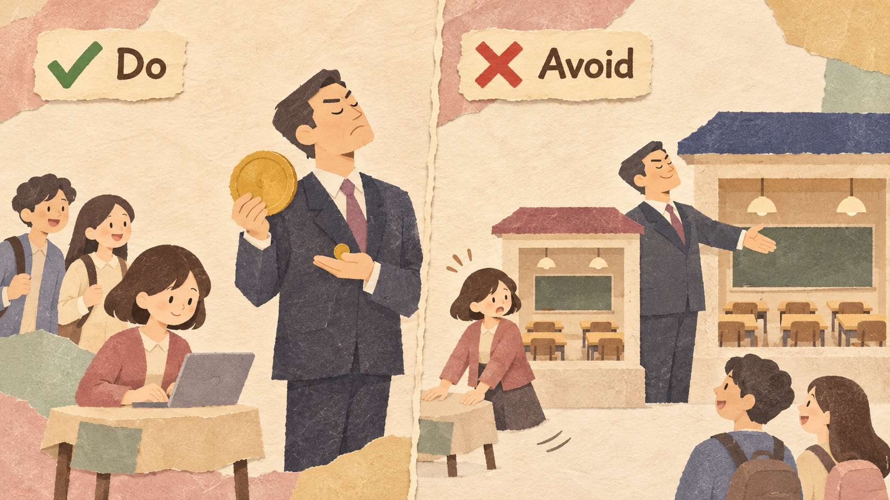
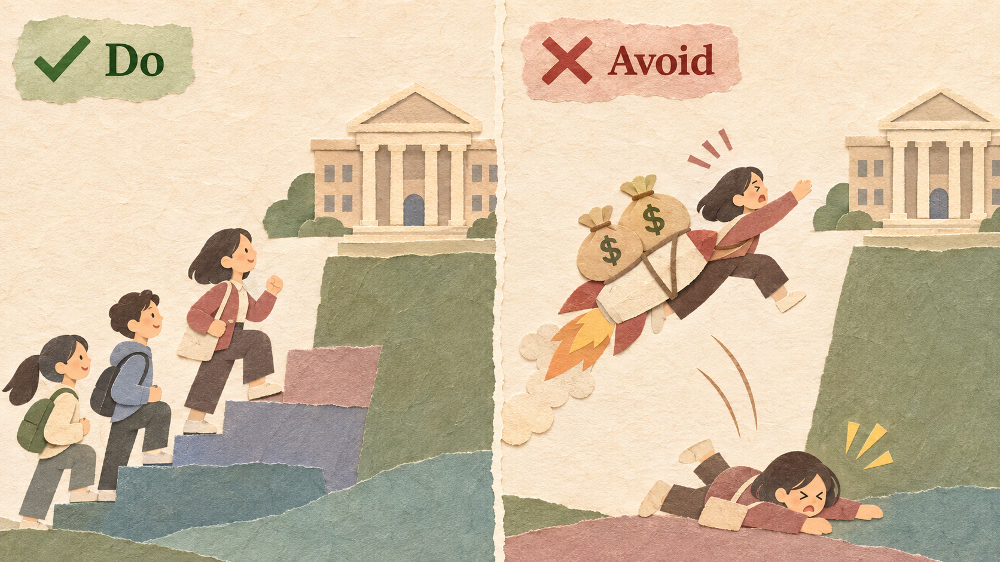

TutorBite is Linh's tutoring app: 15-minute video calls with senior students who explain one homework problem. The campus leader is Apex Academy.
| APEX ACADEMY (LEADER) | TUTORBITE | |
|---|---|---|
| What it offers | Weekly 2-hour classes, expert teachers | 15-minute video help from senior students |
| Price | $160 a month | $5 a session |
| Customers today | 2,000 students | 300 students |
| Profit per customer | $60 a month | $2 a session |
A small company beats a strong leader without fighting it head-on. It starts with customers the leader ignores: people who buy nothing because the leader is too expensive or too hard to use, or customers who get more than they need. It offers a simpler, cheaper product that is good enough. The leader does not fight back, because these customers earn it little profit. Then the newcomer improves step by step until it is good enough for the leader's own customers.
Begin with non-consumers or with the leader's least profitable customers. They are easy to win, and the leader will not miss them.

TutorBite starts with the 8,000 students who use no tutoring. Apex does not serve them, so it will not fight for them.
Going straight after the leader's best customers. The leader is strongest exactly there, and it will fight hard to keep them.
Do not try to be better than the leader at everything. Be good enough at the main job, and much easier and cheaper.

A $5, 15-minute call answers one homework question. Students do not need a 2-hour class for that.
Adding expert teachers, long classes, and a high price to look like the leader. Then the product is neither cheap nor better.
If copying you would earn the leader much less profit than its own product, the leader will ignore you, often until it is too late.

Apex earns $60 a month from each student. Copying TutorBite would earn it about $2 a session, so Apex protects its $160 classes.
Choosing a model the leader can copy easily and profitably, such as the same classes at a slightly lower price. The leader cuts its price and wins.
Use what you learn from your first customers to improve. When you are good enough for the leader's customers, they come to you at a lower price.

After one year, TutorBite adds $40-a-month exam-prep plans with its best senior tutors. Some of Apex's students start to switch.
Spending a lot of money to grow very fast before the product works. A newcomer has little money and cannot survive big mistakes.
Netflix started in 1998 by renting DVDs by mail, with no late fees: slower than a Blockbuster store, but good enough for people who planned ahead. Blockbuster earned a large part of its profit from stores and late fees. In 2000, Netflix offered to sell itself to Blockbuster for $50 million; Blockbuster said no. Netflix started streaming in 2007. Blockbuster filed for bankruptcy in September 2010.
In March 2007, the phone company Safaricom launched M-Pesa: people send money with a simple text message on a basic phone and put in or take out cash at local shops. Fewer than 20% of Kenyans had access to a bank. Safaricom hoped for 350,000 users in the first year; by November 2007 it had more than 1 million active users. Later it added savings, loans, and bill payments.
Quibi launched in April 2020 with expensive short shows from Hollywood stars, made for phones. It raised $1.75 billion and charged $4.99 to $7.99 a month. But people already watched free short videos on YouTube and TikTok. Quibi announced it would close in October 2020, about six months after launch.
Webvan was a U.S. online grocery delivery company. Before it had many customers, it built large high-tech warehouses (about $35 million each) and planned to enter many cities quickly. It lost more than $800 million and went bankrupt in July 2001.
| EXAMPLE | RESULT | THE RULE THAT DECIDED IT |
|---|---|---|
| Netflix | Good | A model the leader did not want to copy (Rule 3) |
| M-Pesa | Good | Served people banks ignored (Rule 1) |
| Quibi | Bad | Attacked strong leaders with a pricier product (Rules 1 and 2) |
| Webvan | Bad | Grew too fast before the model worked (Rule 4) |
Non-consumers = people who need the job done - people who buy from the leader
Compare the leader's profit per customer today with the profit it would earn by copying you. If copying earns much less, the leader will probably not fight back.
Profit = profit per period x number of periods - one-time cost
What you give up to get something you value more.
A promise, written before you start, about which result would make you change your decision.
Example: "If fewer than 500 students use TutorBite in the first three months, we will change the price."
Six companies plan a new product:
| PRODUCT | ANSWER | WHY |
|---|---|---|
| (a) $300 3D printer | Disruption | Schools that bought no printer; much cheaper |
| (b) Faster sports car | Not | Better and pricier for the best customers |
| (c) Free family video calls | Disruption | Families who would never buy a meeting system |
| (d) Metal credit card | Not | A better product for the richest customers |
| (e) $10 online courses | Disruption | People who could not pay for college courses |
| (f) Fourth camera | Not | More features for top customers |
Expert teachers, weekly classes for $120 a month, $20 profit per student a month. Marketing and hiring $20,000 once.
Expect 300 of Apex's 2,000 students; only 100 if Apex cuts its price.
Keep $5 sessions, $2 profit each. Marketing $5,000 once.
Expect 10% of the 8,000 non-consumers to join, each using 3 sessions a month.
Explain disruption and how it differs from sustaining innovation.
Find non-consumers and use the leader's profit test.
Compare a head-on attack with a disruption plan and write a decision rule.
Christensen, C. M., Raynor, M. E., & McDonald, R. (2015). What is disruptive innovation? Harvard Business Review, 93(12), 44-53.
Newsweek (2021). Fact check: Did Blockbuster turn down the chance to buy Netflix for $50 million?
Safaricom (2017). The M-PESA wonder: how it all began.
NBC News (2020, October 21). Quibi is shutting down just months after launching.
TidBITS (2001, July 16). Where Webvan went wrong.